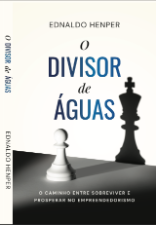

Donos de empresa me procuram cansados de carregar tudo nas costas. Saem com o controle do tempo, do time e do crescimento de volta na mão.
Cientista do comportamento · Estrategista de negócios · Método GNC
Dois dias que reorganizam a forma como você decide, prioriza e lidera. Você entra de um jeito no sábado e sai outro no domingo.
Garantir minha vaga → [ Ferramenta grátis ]Uma ferramenta gratuita que mostra em poucos minutos qual é a fase do seu negócio e o que está travando o próximo nível. Sem conversa de venda.
Fazer o diagnóstico grátis →A jornada de perto comigo e minha equipe, atravessando os quatro limiares que prendem o dono: tempo, dinheiro, pessoas e processos.

O Divisor de Águas O caminho entre sobreviver e prosperar no empreendedorismo. Amazon →